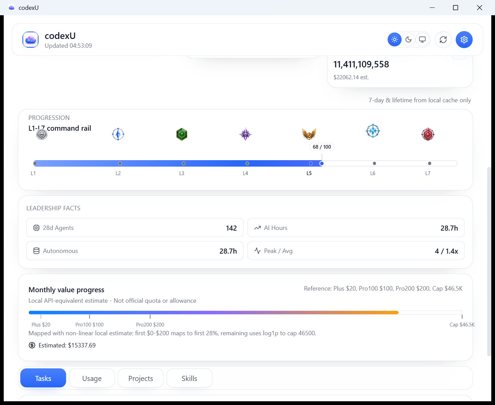

macOS / Windows Dashboard Feature Comparison
Evidence date: 2026-07-28. Hierarchy and evidence comparison only; not pixel, price, quota, or capture-time value parity.
Current Windows boundary
Windows implements a Codex-only path: local Codex sources -> CodexDashboardProvider -> CodexDashboardSnapshot -> source-safe AppState/Tauri IPC -> web Dashboard.
There is no active Claude provider or runtime selector. Local usage stays at codex.snapshot.local; official quotas remain unavailable rather than simulated.
Fixed overview and Leadership
macOS is used as a hierarchy-only reference. The Windows evidence below is limited to the two current accepted native assets.


- AI Leadership is
fixed overviewcorrespondence; detail is a drill-down, not a lower variable panel. - The Windows default is
1462x1196physical / DPI 144, about975x797 CSS px, with three global tabs and a full L1-L7 rail. - Token mix is local telemetry:
1,784,569,471 + 1,706,410,112 + 9,142,958 = 3,500,122,541, with no raw body content. - Month value is a local estimate, not strict macOS monthly Wool evidence; source semantics, pricing, and Token mix meaning differ.

Windows shows identity, score, rail, and metrics. Its score is independent and evidence-gated; missing evidence stays null/pending.
Lower panels: evidence boundary

The current native lower-navigation evidence is the image above. At 1462x1196 physical pixels / DPI 144, it shows readable L1-L7, Month value explicitly labelled local API-equivalent estimate / not official quota, and one Tasks / Usage / Projects / Skills tab bar. It establishes current navigation hierarchy only; it does not establish each variable panel's internal content or strict one-to-one macOS equivalence.
Tasks and Skills remain variable panel + not implemented in strict cross-platform comparison only. That label is not a global conclusion about product scope, source, Reader, IPC, or roadmap. Tool usage is not relabelled as Skills.
Validation
| Check | Result |
|---|---|
npm run build | pass |
cargo test --workspace | pass: 35 core + 7 Tauri tests |
cargo tauri build --no-bundle | pass; release EXE built 2026-07-28 04:23:36 Asia/Shanghai |
git diff --check | pass |